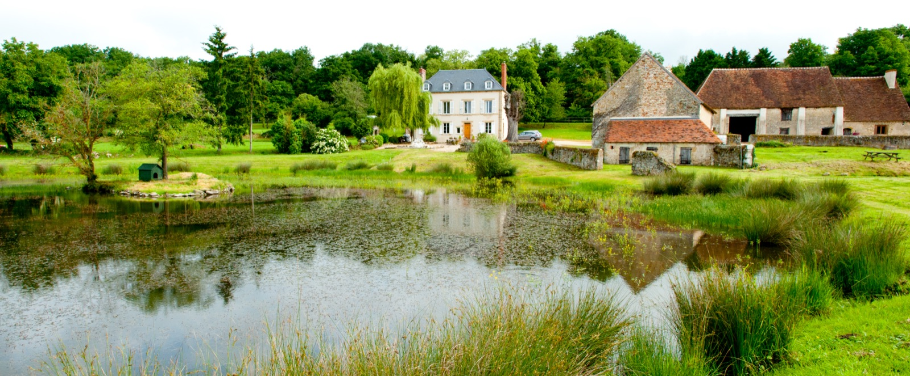

Prissac · Indre · France
A house we loved,
and the stories it kept
Fontmorand was our family's maison de maître in the quiet heart of France. We have gathered its photographs and its stories here - the medieval font hidden in its own grove, the night in 1944 that spared the village, and fourteen years of our own.

We bought Fontmorand in 2004 and sold it, fourteen years later, with real reluctance. In between, it taught us about lime mortar and long lunches, about the Brenne's thousand lakes, and about how a house can hold a century of other people's memories alongside your own.
The house from the air

The House
Three storeys built from the remains of a château, two 16th-century barns, and 3.5 hectares of the Val de l'Abloux.
Chapter IIThe Story
A medieval font, a saint from Worms, a wartime night, and the people who came before us.
Chapter IIIThe Photographs
The album - the house, its rooms, its out-buildings and its grounds, captioned and dated.
Chapter IVThe Valley
Secret France - the Creuse, the Brenne's lakes, and why we never wanted the south.
Fontmorand has new owners now, and we wish them every happiness there. These pages stay online so that the house's photographs and stories are not lost.